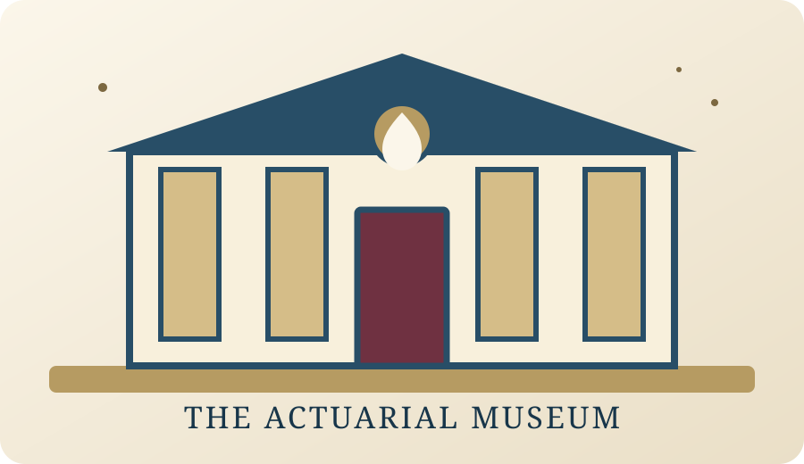

THE ACTUARIAL MUSEUM
Four exhibits. Two minutes. One story.
Your team is curating a new exhibition about the birth of actuarial science. Cross four historical galleries, choose the objects and labels that deserve a place in the museum, and build your final two-minute team pitch throughout the game. The 2-minute limit is for the whole team, not for each student.
- One device per team · 4 illustrated museum galleries
- 3 or 4 players with adapted roles
- Deterministic choices and 32-point curatorial score
- Past Simple / Past Perfect storytelling challenges
- Sound effects + optional British-English curator voice
- Live Pitch Notebook: one 30–45 word speaking note required before each gallery can be saved
- Final deliverable: ONE 2:00 team pitch in total · every student speaks
- Final pitch structure: exhibit + evidence + significance + historical link + conclusion
- Accurate final 2:00 practice timer